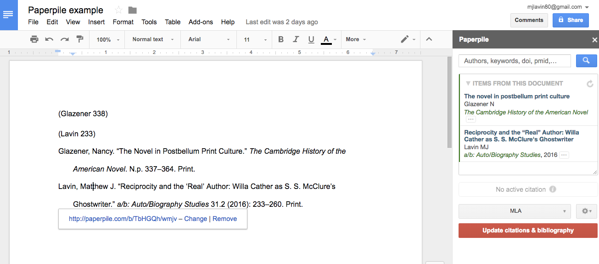

class: middle # Evernote, Zotero, Paperpile ## Three Digital Tools I Use <hr> ### Matthew J. Lavin ### Clinical Assistant Professor of English and Director of Digital Media Lab ### University of Pittsburgh ### September 2017 --- class: middle # Evernote <hr> ### <blockquote>"a cross-platform app designed for note taking, organizing, and archiving"</blockquote> --- class: middle # Main Features <hr> <ul style="width: 70%; margin-left: 250px; font-size: 150%;"> <li>Basic notetaking is easy and fast</li> <li>Photos, checklists, binders</li> <li>Excellent search functionality</li> <li>Integrates well with mobile app</li> <li>Speech-to-text</li> <li>Handwriting</li> <li>Optical character recognition of documents</li> </ul> --- class: middle # Search within Handwritten Notes <hr> ### Try taking a photo of a whiteboard and seeing if Evernote will index the words in the photo. --- class: middle # Zotero <hr> ### <blockquote>"a powerful, easy-to-use research tool that helps you gather, organize, and analyze sources and then share the results of your research"</blockquote> --- class: middle # Zotero <hr> - ### Manages bibliographical information - ### Sort resources into folders and easily find duplicate citations - ### Easy to generate data from Google books, Google scholar, and library resources - ### Hand edit or insert citations for better accuracy - ### Use to insert citations and Works Cited page into documents - ### Quickly change citation formats --- class: middle # Zotero <hr> - ### Store article pdfs in Zotero - ### Works with Microsoft Word - ### Access your account from anywhere - ### Create groups of Zotero users and share citations - ### Write computer programs that use Zotero citations for bibliometrics --- class: middle # Paperpile <hr> ### Works a lot like Zotero ### Integrates directly with Google docs --- class: middle # Paperpile <hr>  --- class: middle # Paperpile <hr> ### Smooth, cloud-based bibliographical management software ### Seems to be improving very quickly --- class: middle # Paperpile <hr>